Geometry and Trigonometry¶
This chapter contains useful stuff that aren’t too difficult to get started with. You’ll find it especially useful if you like writing games, and this chapter contains a working example game.
Note
Usually the y axis is so that more y means up, but in this chapter it’s “upside down” and more y means down. Almost all programming things use the “more y means down” version and are compatible with this chapter.
If you’re a mathematician everything looks really weird to you, but if you’re a programmer who wants to get stuff done you’ll enjoy not having to add minus signs everywhere before using formulas from this tutorial.
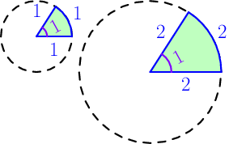
Radians and Tau¶
Angles are often measured in radians. The angles in the pictures at right are both one radian. The angle is always 1 radian if the arc and radius lengths are equal, and it doesn’t matter what that length is.
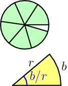
If we try to fill a circle with these 1 radian slices, 6 of them fit and
there’s some room left over. To be more precise, we can add 6.2831853…
slices. This number is called tau and written with the Greek tau letter  .
So, a full turn is radians. Be careful not to confuse with other
letters like
.
So, a full turn is radians. Be careful not to confuse with other
letters like  .
.
The yellow slice at right shows another way to define an angle in radians, and it’s compatible with the green slices because if we set 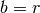 the angle is 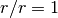 radian.
Sometimes the yellow slice definition is handier; for example, if we draw a
full circle we know the angle in the center is radians (full turn), so
we get this:
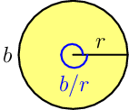
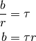
So we can multiply with tau to get from a radius to a perimeter. This is how
is usually defined.
Some programming languages like new Pythons have a tau constant, but if
your favorite language doesn’t, use 2*pi instead. Here pi is the more
well-known circle constant 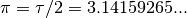, and almost all
programming languages have something like math.pi or Math.PI. I find
easier to work with than  because if I see 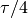 somewhere I
know immediately that it’s a quarter turn, but 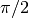 isn’t as obvious. Of
course, you can use if you prefer it over .
because if I see 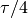 somewhere I
know immediately that it’s a quarter turn, but 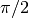 isn’t as obvious. Of
course, you can use if you prefer it over .
Degrees¶
Degrees are an alternative to radians, and they work so that 360° is a full turn. Here ° is the degree symbol, and 360 is just an arbitary number that someone has chosen a long time ago.
If you need to convert between radians and degrees, use the fact that 360
degrees is radians. Here’s a Python example:
def degrees2radians(degrees):
return degrees / 360 * math.tau
def radians2degrees(radians):
return radians / math.tau * 360
Use 180 and pi instead of 360 and tau if your programming
language doesn’t have a tau constant. You can also do something like
TAU = 2*Math.PI. Or better yet, some programming languages feature
conversion functions in standard libraries like Python’s math.radians() and
math.degrees().
Basic Angle Stuff¶
Problem
The ball of a ball-and-paddle game is moving at the angle of 0.5 radians and it hits a wall at right. How should the angle change?
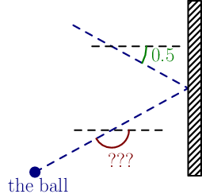
Note that both angles are measured down from a horizontal line clockwise because that’s a standard in programming. In math, angles are usually measured up from a horizontal line and counter-clockwise.
We can solve our problem by taking the 0.5 radian angle sign and moving it like this:
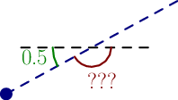
Now you can see that the angles add up to half turn, and that’s 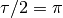 radians, so we get this equation:
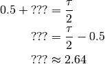
I did the last step with Python.
In math it’s common to use a letter instead of “???” to represent an unknown value. For example:
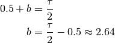
It’s easy to calculate similar things for other directions. Here are the
results, where  is the original angle and
is the original angle and  is the changed angle:
is the changed angle:
- If the ball hits left or right wall, 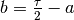.
- If the ball hits top or bottom, 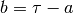.
Note that an angle like 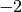 radians is perfectly valid and equivalent to
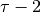 radians. If you want to make sure that an angle is between and
, use something like angle % tau where % is division remainder.
Trig (aka trigonometry) with the Unit Circle¶
Problem
This time the ball moves at the angle of 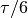, and it should move 5 pixels every time the screen is updated. How many pixels should its x and y change every time?
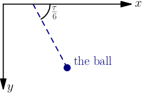
Our problem has something to do with sine and cosine. The unit circle is a circle with radius 1 placed in the middle of the xy plane. Here’s a picture that shows what sine and cosine are:
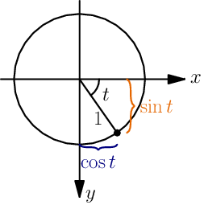
This is really simple: the x coordinate is  and the y coordinate is
and the y coordinate is
 . But the radius of the unit circle is 1 instead of our 5, so we need
to multiply everything by 5 to scale it up. We get this:
. But the radius of the unit circle is 1 instead of our 5, so we need
to multiply everything by 5 to scale it up. We get this:
ball.x += 5*cos(tau/6)
ball.y += 5*sin(tau/6)
Note that cos() and sin() functions use radians by default in almost
all programming languages. Let’s try this out with Python just to make sure
that everything works:
>>> import math
>>> math.sin(math.tau/6)
0.8660254037844386
>>> math.cos(math.tau/6)
0.5000000000000001
These results make sense because the angle in the above image looks like
it’s about a sixth of a turn (or ), so  should be close
to 1 because the circle’s bottom is at 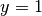. Similarly, the marked on
the picture seems to be about half of the radius, and the radius is 1.
should be close
to 1 because the circle’s bottom is at 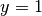. Similarly, the marked on
the picture seems to be about half of the radius, and the radius is 1.
0.5000000000000001 is obviously not an accurate result, but it’s good
enough for a programmer while a mathematician would say that
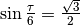 and 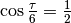. I
might write more about how the heck I came up with those mathy-accurate values
some day.
Example: Ball and Paddle¶
Here’s a minimal game written with my canvaswrapper.js script that demonstrates most things we have learned so far. Click it, press arrow up to start the game and then use arrow keys to move the paddle.
Here's the code:
var screen = new CanvasWrapper('canvas1');
const TAU = Math.PI*2;
var paddle = {
length: 200,
thickness: 15,
speed: 10,
movement: 0, // -1 means left, 0 means right
};
paddle.top = screen.height - paddle.thickness;
var ball = {
radius: 10,
speed: 10,
moving: false,
};
function resetGame() {
paddle.centerx = screen.width/2;
ball.centerx = screen.width/2;
ball.centery = screen.height-paddle.thickness-ball.radius;
ball.angle = 0.75*TAU;
ball.moving = false;
}
resetGame();
runRepeatedly(function() {
screen.fill('black');
screen.drawRectangle(
paddle.centerx-paddle.length/2, screen.height-paddle.thickness,
paddle.length, paddle.thickness, '#00ff00');
screen.drawCircle(ball.centerx, ball.centery, ball.radius, 'white');
if (ball.moving) {
if (ball.centery > screen.height) {
resetGame();
return;
}
ball.centerx += ball.speed * Math.cos(ball.angle);
ball.centery += ball.speed * Math.sin(ball.angle);
if (ball.centerx < ball.radius) { // bumps left wall
ball.angle = TAU/2 - ball.angle;
ball.centerx = ball.radius;
} else if (ball.centerx > screen.width-ball.radius) { // right wall
ball.angle = TAU/2 - ball.angle;
ball.centerx = screen.width-ball.radius;
} else if (ball.centery < ball.radius) { // top
ball.angle = TAU - ball.angle;
ball.centery = ball.radius;
} else if (ball.centery > screen.height-paddle.thickness-ball.radius) {
// paddle?
paddleLeft = paddle.centerx - paddle.length/2;
paddleRight = paddle.centerx + paddle.length/2;
if (paddleLeft < ball.centerx && ball.centerx < paddleRight) {
// yes, it hits the paddle
ball.angle = TAU - ball.angle;
ball.centery = screen.height-paddle.thickness-ball.radius;
// also adjust the angle depending on which side of the paddle the
// ball hits
ball.angle += (ball.centerx - paddle.centerx) / 100;
}
}
paddle.centerx += paddle.movement*paddle.speed;
}
screen.getEvents().forEach(evt => {
if (evt.type == 'keydown') {
if (ball.moving) {
if (evt.key == 'ArrowLeft') {
paddle.movement = -1;
} else if (evt.key == 'ArrowRight') {
paddle.movement = 1;
}
} else {
if (evt.key == 'ArrowUp') {
ball.moving = true;
return;
}
}
} else if (evt.type == 'keyup' && (
(evt.key == 'ArrowLeft' && paddle.movement == -1) ||
(evt.key == 'ArrowRight' && paddle.movement == 1))) {
// cancel the previous ArrowLeft or ArrowRight press
paddle.movement = 0;
}
});
});
Trig with a Triangle¶
Problem
The ball moves 10 pixels down and 20 pixels right. What angle is that?
Here’s another way to define  and
and  , and another function called
that we haven’t used before.
, and another function called
that we haven’t used before.
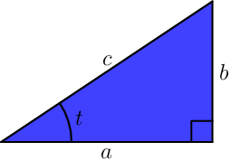
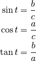
These things work only if the triangle has an angle that is exactly a quarter turn, and the little box at bottom right means just that. These definitions are compatible with the unit circle stuff above; see this thing.
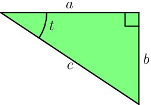
The green triangle is just like the blue one, but I flipped it so that we can
calculate the stuff by plugging in and 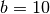 without worrying about
which way things go. Let’s figure out how to calculate the :
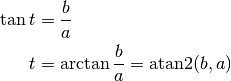
Here is the inverse of , so 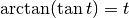. Most
programming languages have an atan(x) function that returns ,
but I don’t recommend using it in this case; the atan2(b,a) function
returns  and I recommend it instead.
and I recommend it instead. atan2 looks at the
signs of and and does the right thing if they’re negative (the ball is
moving to e.g. top left). It also works if a is 0 and b/a would fail as
division by zero is undefined.
Note
Usually people like to put  before
before  in different kinds of places, but
in different kinds of places, but
atan2 is used like atan2(y_change, x_change), not like
atan2(x_change, y_change).
Finally, it’s time to calculate our stuff:
>>> from math import atan2
>>> atan2(10, 20)
0.4636476090008061
Pythagorean Theorem¶
Problem
The ball moves 10 pixels down and 20 pixels right, just like in the previous problem. How many pixels is that in total, measured diagonally?
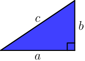
Here’s a handy equation, also known as the Pythagorean theorem:
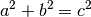
Again, the angle of the corner between a and b must be a quarter turn, like it is in the image. If you’re wondering how the heck it works see this proof.
Let’s solve  from the equation by applying
from the equation by applying  on both sides:
on both sides:
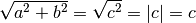
Here is the absolute value. The last step assumes 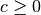, but that’s not a problem because a triangle with a negative side length doesn’t make much sense.
“Hypotenuse” is a fancy word that means the longest side of a triangle with a
quarter-turn angle, and that’s why some programming languages have a
hypot(a, b) function that returns 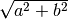.
Let’s calculate the distance:
>>> from math import hypot, sqrt
>>> hypot(10, 20)
22.360679774997898
>>> sqrt(10**2 + 20**2)
22.360679774997898
Vectors¶
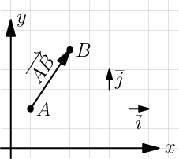
A point is simply a pair of x and y coordinates, and a vector represents the
difference between two points. For example, if we have the points  and
and
 , the vector from A to B is
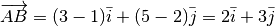. Here
and 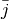 are vectors that go right and up by 1 unit, respectively.
, the vector from A to B is
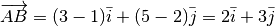. Here
and 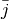 are vectors that go right and up by 1 unit, respectively.
A vector like 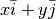 can be also written as 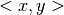. Use whatever style you want.
We could also use vectors to do similar things as in the unit circle trig section. The advantage with vectors is that moving the ball is really easy:
ball.x += speed_vector.x
ball.y += speed_vector.y
A disadvantage is that if we want to change the angle that the ball moves at
we can’t just do moving_angle += something. We’ll look into how this is
done in a moment.
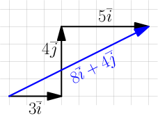
Another nice thing about vectors is that they can be +’ed together easily. For example, if we first move 3 units to right, then 4 units up and finally 5 more units to right, we move a total of 8 units to right and 4 units up. That’s how 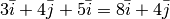.
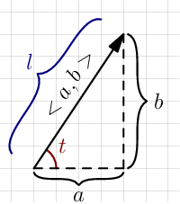
These vector calculations are just like the Pythagorean theorem and unit circle trig stuff above:
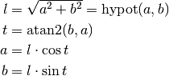
Example: if we move 1 unit to the right and 2 units up, our vector is  ,
its length is 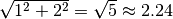 and the angle is
radians. On the other hand,
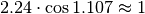 and 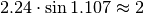.
,
its length is 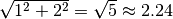 and the angle is
radians. On the other hand,
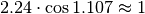 and 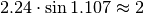.
One way to change the angle of a vector is to first convert it to a length and an angle, change that angle and create a new vector. It looks like this in pseudo-ish code:
length = hypot(speed_vector.x, speed_vector.y)
speed_vector.x = cos(new_angle) * length
speed_vector.y = sin(new_angle) * length
Example: Vector class in Python¶
Here’s a Vector class I implemented in Python running with
repl.it. A Vector(x, y) represents
. I didn’t add operator overloading because I wanted to
keep everything nice and simple. Click the “play”-shaped button at top to run
the code and then use the Python shell at right.